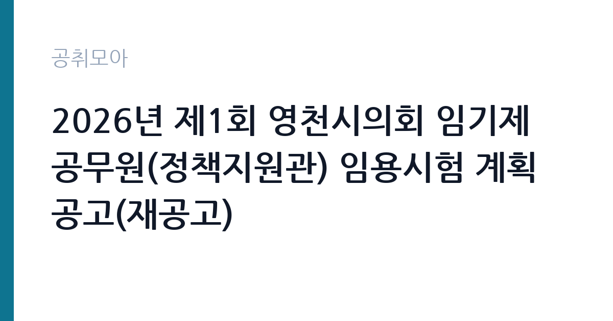

[지자체] 2026년 제1회 영천시의회 임기제공무원(정책지원관) 임용시험 계획 공고(재공고)
경상북도 영천시 의회사무국 · 경북 · 마감 2026-10-15 (D-10) · 출처 나라일터

한눈에 보는 모집 조건
| 기관 | 경상북도 영천시 의회사무국 |
|---|---|
| 공고명 | 2026년 제1회 영천시의회 임기제공무원(정책지원관) 임용시험 계획 공고(재공고) |
| 고용형태 | 임기제 |
| 근무지 | 경북 |
| 게시일 | 2026-10-02 |
| 마감일 | 2026-10-15 (D-10) |
지원자격, 이렇게 읽으세요
- 일반임기제 7급(정책지원관) 2명
- 접수 ~2026-10-15 마감
- 세부 조건은 원문 공고문 확인
정책지원관은 통상 행정과 법률, 예산, 회계 등 관련 분야 학사 이상 또는 실무 경력을 요구하는 경우가 많습니다. 지방의회 의원 정수의 2분의 1 범위에서 두는 전문 인력이라 조례안 검토와 예산 심의 보조 같은 실무 이해가 중요합니다. 확정 응시자격과 경력 산정 기준은 원문 공고문에서 확인하셔야 합니다.
이 공고의 포인트
이 공고의 포인트는 재공고라는 점과 2명 모집이라는 점입니다. 재공고는 1차 경쟁률이 낮았거나 적격자가 없었다는 신호일 수 있어, 자격을 갖춘 지원자에게는 상대적으로 문이 넓습니다. 일반임기제 7급은 7급 상당 대우를 받는 자리이며, 근무지는 경북 영천시의회입니다. 마감일은 2026년 10월 15일입니다. 의정 지원 경력은 이후 다른 지방의회 정책지원관이나 국회 보좌진, 공공기관 대외협력 자리로 이어질 수 있어 경력 확장성이 있습니다.
전형은 어떻게 진행되나
전형은 서류전형과 면접시험으로 진행되는 것이 일반적이며, 세부 일정은 원문 공고문에서 확인하셔야 합니다. 재공고 특성상 접수 기간이 짧을 수 있으므로 공고문을 확인하는 즉시 서류를 준비하시기 바랍니다. 제출 서류와 접수 방법은 원문 기준을 따르시기 바랍니다.
이런 분께 추천해요
- 지방의회와 조례, 예산 심의 실무에 관심이 많은 분
- 행정과 법률, 재정 분야 전공자나 관련 경력자
- 영천 지역에 정착하면서 의정 지원 전문가로 일하고 싶으신 분
지원 전 체크리스트
- 재공고이므로 접수 기간과 변경 사항을 원문에서 반드시 확인하셔야 합니다
- 관련 전공과 경력을 증빙할 서류를 빠짐없이 준비하셔야 합니다
- 일반임기제 보수와 임용 기간, 연장 조건을 확인하고 지원하셔야 합니다
- 의원 보좌 성격의 업무 특성을 이해하고 지원하셔야 합니다
모집 일정과 제출 타이밍
공고 게시일은 2026년 10월 2일이며 마감일은 10월 15일입니다. 이후 서류전형과 면접시험이 순차적으로 진행됩니다. 재공고는 일정이 촉박하게 운영되는 경우가 많으므로 접수 첫주 안에 서류를 제출하시기 바랍니다.
직무 이해하기: 지자체
정책지원관은 지방의회 의원의 조례 제정과 개정 검토, 예산안과 결산 분석, 행정사무감사와 시정질문 자료 준비, 민원 현안 조사와 정책 대안 마련을 지원합니다. 영천시의 주요 현안인 산업단지와 농업, 인구 정책 자료를 정리해 의원에게 보고하는 일이 포함됩니다. 정치적 중립을 지키면서 전문성으로 보좌하는 것이 핵심입니다. 회기 중에는 본회의와 상임위원회 속기록을 정리하고 쟁점 사항을 요약해 의원에게 전달하는 일도 맡습니다.
자기소개서 작성 팁
자기소개서에는 조례나 예산을 다뤄본 경험을 조문과 금액 단위로 구체적으로 적으시기 바랍니다. 행정사무감사 지원이나 정책 분석 보고서 작성 경험이 있다면 본인의 기여도를 분명히 하시면 좋습니다. 영천시 현안에 대한 이해를 보여주는 한 단락을 포함하시면 지역 의회에 대한 진정성이 전달됩니다. 정책지원관 자기소개서는 의정활동 이해도와 문서 작성 역량을 함께 보여주는 것이 핵심이므로, 분량을 조례 검토 사례 중심으로 구성하시기 바랍니다.
면접 준비 포인트
면접에서는 의회와 집행기관의 관계를 묻는 기본 질문과 조례안 검토 절차 같은 실무 질문이 나올 수 있습니다. 최근 영천시의회 이슈를 하나 파악해 본인의 분석 의견을 정리해 가시기 바랍니다. 정치적 중립 의무에 대한 이해를 분명히 밝히시면 신뢰를 얻으실 수 있습니다.
급여·근무조건 읽는 법
일반임기제 7급은 7급 상당으로 지방공무원보수규정의 하한액을 기준으로 보수가 책정됩니다. 정책지원관은 전문성을 인정받아 경력에 따라 상한액 방향으로 협의되는 경우도 있으나, 확정 보수는 임용 기관과 협의로 정해집니다. 정확한 보수 수준과 수당 항목은 원문 공고문에서 확인하셔야 합니다. 출처는 지방공무원보수규정과 임기제 보수 안내 자료입니다.
자주 묻는 질문
- 재공고는 1차와 무엇이 다릅니까
응시자격 완화나 일정 변경이 있을 수 있습니다. 변경 내용은 원문 공고문에서 대조하시기 바랍니다. - 정책지원관은 공무원이 맞습니까
일반임기제공무원 신분으로 임용 기간 동안 공무원 보수와 복무 규정을 적용받습니다. - 임기는 얼마나 됩니까
임기제 특성상 1년에서 2년 단위로 임용되며延장될 수 있습니다. 확정 기간은 원문 공고문에서 확인하시기 바랍니다.
함께 보면 좋은 공고
[지자체] 2026년 제3회 상주시 임기제공무원 임용시험 계획 공고(6) - 학예연구 분야 — 마감 2026-10-20[지자체] 2026년 상주시 임기제공무원 임용시험 계획 공고(5) - 중앙제어실 운영 분야(상수도) — 마감 2026-10-20[지자체] 2026년 제3회 상주시 임기제공무원 임용시험 계획 공고(4) - 상황실 전담요원 분야 — 마감 2026-10-20출처: 나라일터 공개정보를 바탕으로 공취모아가 정리한 안내글입니다. 모집 조건·일정은 변경될 수 있으니 지원 전 반드시 원문 공고문을 확인하세요. 본 글은 정보 제공용이며 합격을 보장하지 않습니다.